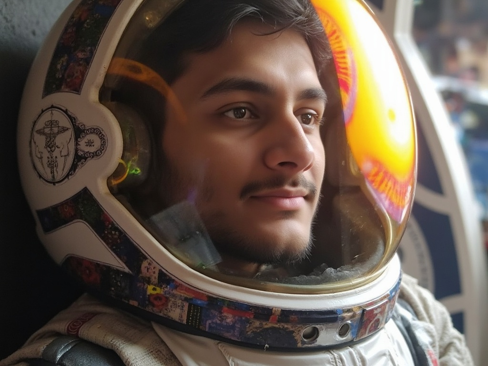

Hi, I'm Bharat
Work towards things that matter.
I am currently working at Unstudio.ai as a machine learning engineer. I joined the company during Fall 2024 at college and have been working here ever since remotely. I work on diffusion models (FLUX.1-dev mostly), improving their output quality and reducing inference time. (Below image is generated with it)
I am fascinated by the productivity levels at start-ups, and hence made the call to join one. Previously, I was working at Styldod Inc.as a machine learning researcher.

How I Got Here
Taking two steps back, I landed in IIT Indore after clearing the JEE Advanced exam in 2022. For those who are unaware of the magnitude of this examination, each year some 1.2 million students appear for the JEE Mains exam, out of which only 250,000 students are selected to appear for the JEE Advanced exam. Getting into a computer science program at IITs is considered highly prestigious in India, and I was fortunate enough to get into one of the top IITs in the country after securing an all India rank of rank of 1083 in the JEE Advanced exam.
After joining IIT Indore, I immersed myself in both technical and creative pursuits. I joined the cybersecurity division of the Programming Club and the Game Development team at the Gaming Club. My first year was spent:
- Participating in various CTF competitions
- Learning web development and game development
- Exploring different Linux distributions, ultimately choosing Arch Linux with Hyprland WM as my preferred environment
During my sophomore year, I focused on several key areas:
- Completed course projects in Python programming, machine learning, DBMS, system design, and data structures & algorithms
- Conducted research under Prof. Nagendra Kumar in computer vision, focusing on multi-modal data classification
- Participated in coding competitions and hackathons
I became part of the team representing IIT Indore solving the Behaviour simulation challenge proposed by Adobe in Inter IIT 12.0 held at IIT Madras. My project for Inter IIT 12.0 at IIT Madras focused on the Adobe Behavior Simulation Challenge. I worked on developing two models:
- A prediction model for tweet engagement based on content and multimedia
- A content generation model that creates tweets based on target metrics and media
My primary responsibility was data preprocessing, handling diverse data types including text, images, videos, GIFs, and audio, and transforming them into machine-learning-ready formats.
Currently, during my junior year, I pursued two significant professional experiences:
- Unstudio.ai (Machine Learning Engineer)
- Improved output quality of Black Forest Lab's FLUX.1-dev
- Optimized inference time for product staging and developed consistent image generation workflow based on product input
- Currently working on implementing a scalable serverless architecture solution
- Styldod Inc. (Machine Learning Researcher)
- Developed an AI model for furniture placement visualization in rooms.
- Led a 3-person team in data curation, labeling, and pipeline development
- Scaled the system to handle millions of images
My Values & Beliefs
Patience
Like many people today, I sometimes feel the pressure to have everything figured out - the perfect job, relationships, and life path. But I've learned that good things take time. Instead of rushing, I focus on steady progress and trust that putting in consistent effort will lead to the right opportunities.
Priorities
While I'm ambitious about my work, I believe in maintaining balance between professional growth and personal well-being. Taking care of health, relationships, and personal interests are just as important as career goals.
Simplicity
I believe in keeping things simple. In an increasingly complex world, simplicity offers clarity and helps make better decisions. It's not just a preference - it's a practical approach that leads to sustainable solutions.
Humility & Gratitude
I believe in staying grounded and appreciating life's opportunities. Success is sweeter when shared, and every achievement is built on the support of others. Maintaining humility while pursuing goals helps build lasting relationships and creates meaningful impact.
Punctuality
I value time - both mine and others'. Being punctual isn't just about showing up on time; it's about respecting commitments and delivering results when promised. This discipline helps build trust and creates a foundation for successful collaborations.
Consistency
I believe in the power of consistent effort over sporadic brilliance. Regular practice, steady improvement, and reliable performance are the cornerstones of long-term success. Small daily actions compound into significant achievements over time.
Why Work With Me
I am passionate about solving complex problems and delivering high-quality results. My background in machine learning and software development, combined with my experience in working with diverse teams, makes me a valuable asset to any project.
I am a quick learner, adaptable to new technologies, and always eager to take on new challenges. My strong foundation in computer science allows me to approach problems methodically and find efficient solutions.
I believe in maintaining a balance between professional growth and personal well-being, ensuring that I bring my best self to work every day. My commitment to punctuality, consistency, and simplicity helps build trust and fosters successful collaborations.
A Few More Words About Myself
My about page is about to finish and I still have not mentioned some very important aspects of my life - I'm a huge anime and gaming enthusiast! I love watching anime in my free time and some of my favorites include One Piece, Bleach, Code Geass and FMAB, which I also recommend everyone to watch.
Gaming has been a big part of my life and I enjoy both casual and competitive games. I particularly enjoy RPGs and strategy games, spending countless hours exploring virtual worlds and solving complex challenges. Some of my favorite games include The GTA VC, SA and 5, COD MW 2 & 3 older version, Titanfall 2 and for car enthusiast (me too) Forza Horizon 4.
After joining IIT, I discovered another fascinating hobby - Linux ricing. I've spent a lot of time customizing my Linux setup, experimenting with different window managers, and tweaking configs to create the perfect desktop environment. Currently, I'm running Arch Linux with Hyprland WM, and I love how it perfectly balances aesthetics and functionality.